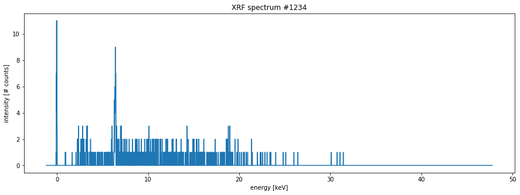
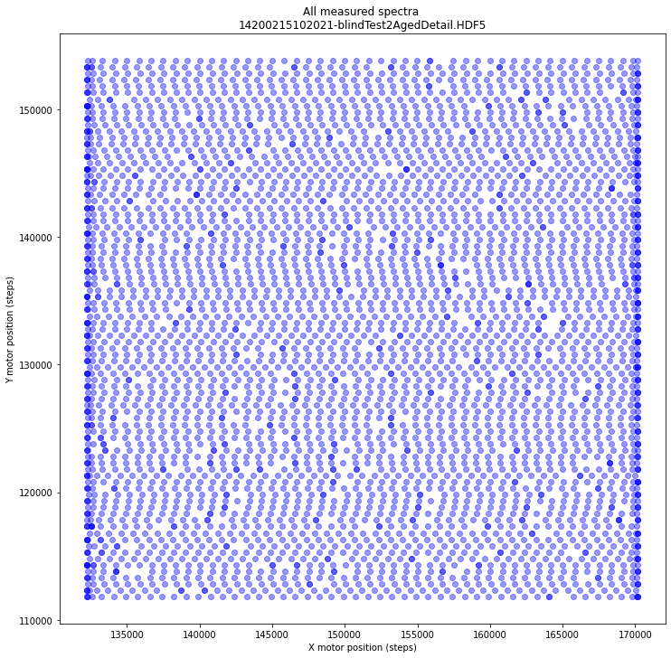
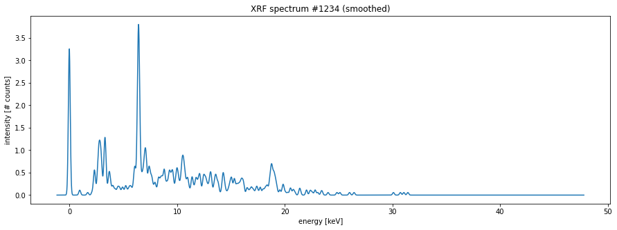

from cronomaxrf import read_datasets, get_arrayInterpolation gymnastics
How to better convert wobbly positions into a regular spectral image data cube?
In the previous section it became clear that there is an issue with the irregular motor positions of the spectral data. This was dealt with by ‘gridifying’. In other words, throwing away quite some spectral data and ignoring information about the precise motor positions. I expect that we can do better than that if we make use of all the data and interpolate the positions.
First we need again to read the relevant datasets from the Crono file.
crono_filename = '14200215102021-blindTest2AgedDetail.HDF5' # 50 Mb
datasets = read_datasets(crono_filename)
for i, d in enumerate(datasets):
star = ' '
if i in [14, 17, 26, 28]:
star = '*'
print(f' {star}[{i}] {d.name}') [0] /Configuration/FinalSystemStatus
[1] /Configuration/InitialSystemStatus
[2] /Configuration/Settings
[3] /CreatedDateTime
[4] /CreatedWithSoftwareVersion
[5] /FileStructureVersion
[6] /Images/Documentation
[7] /Images/ImageAdjusting/ImagePixelSizeRatio
[8] /Images/Static
[9] /Images/StitchedImage
[10] /Images/VideoStreams
[11] /XRF/CalibrationPoints
[12] /XRF/DPPStartTimestamp
[13] /XRF/Detected
*[14] /XRF/EnergyVector
[15] /XRF/LiveTimes
[16] /XRF/Maps/ComputedMaps
*[17] /XRF/MotorsPositions
[18] /XRF/MotorsPositionsStats
[19] /XRF/MotorsTimestamps
[20] /XRF/OutputCountRates
[21] /XRF/ROIs/ROIsEnergies
[22] /XRF/ROIs/ROIsNames
[23] /XRF/ROIs/ROIsObjects
[24] /XRF/RealTimes
[25] /XRF/ResetCounterValue
*[26] /XRF/Spectra
[27] /XRF/SpectraIDs
*[28] /XRF/SpectraSelectedIndex
[29] /XRF/Timestamps
[30] /XRF/XComputedMapsCoordinate
[31] /XRF/YComputedMapsCoordinateBefore exploring the spatial interpolation let’s take a look at the spectral data itself that is stored in datasets 14 and 26.
spectra = datasets[26][...]
energies = datasets[14][...]Now, let’s plot an arbitrary spectrum to get an idea what they look like.
import matplotlib.pyplot as pltmy_spectrum = spectra[1234] # arbitrary
fig, ax = plt.subplots(figsize=[15, 5])
ax.plot(energies, my_spectrum)
ax.set_xlabel('energy [keV]')
ax.set_ylabel('intensity [# counts]')
ax.set_title('XRF spectrum #1234');
This spectrum looks like a broken comb! Very few intensity values exceed two photons! For paper objects this is unfortunately often the case. It will be very hard to work with such data directly. So below I will perform a Gaussian smoothing. However, before doing that we need to take a look again at the motor position information. This information is stored in dataset 17.
x, y, _ = datasets[17][...].T # we do not use the z values
The markers for the individual spectral motor positions are plotted using a transparent blue. Darker blue dots as seen mostly near the edges indicate multiple overlapping positions.
Although our tiny test data files fit well into memory, typical MA-XRF data files can be rather big. In order to be ready for these big files I will show below how do efficient out of memory computations that read and write directly from and to disk using the excellent python packages dask, h5py, and zarr. As our file format we will make use of the zarr zipstore format. Ok, let’s read and convert the Crono HDF5 file to a zarr zipstore file and inspect it’s content tree. While converting with the convert_crono() function, I will automatically smooth the spectra with a Gaussian filter.
from cronomaxrf import convert_crono, tree, get_arrayzipstore_filename = convert_crono(crono_filename)Computing (smoothed) spectra...
[########################################] | 100% Completed | 0.7s
Computing (smoothed) spectral data cube from selection...
[########################################] | 100% Completed | 0.8s
Computing (smoothed) max spectrum...
[########################################] | 100% Completed | 0.6s
Computing (smoothed) sum spectrum...
[########################################] | 100% Completed | 0.6s
Writing channel energies...
[########################################] | 100% Completed | 0.1sUsing the tree() function we can see the contents of the zipstore file.
tree(zipstore_filename)
14200215102021-blindTest2AgedDetail.zipstore:
/
├── maxrf_all_spectra (4284, 4096) float32
├── maxrf_cube (85, 37, 4096) float32
├── maxrf_energies (4096,) float32
├── maxrf_max_spectrum (4096,) float32
└── maxrf_sum_spectrum (4096,) float32To read an array from the zipstore file you can use the get_array() function. As can be seen in the plot below, the ‘broken comb’ spectrum is more smooth now.
my_spectrum_smoothed = get_array(zipstore_filename, 'maxrf_all_spectra')[1234]
my_spectrum = spectra[1234] # arbitrary
fig, ax = plt.subplots(figsize=[15, 5])
ax.plot(energies, my_spectrum_smoothed)
ax.set_xlabel('energy [keV]')
ax.set_ylabel('intensity [# counts]')
ax.set_title('XRF spectrum #1234 (smoothed)');
To be continued soon!
API
get_array
get_array (zipstore_filename, datapath, compute=True)
Open zipstore zipstore_filename and return dataset from datapath.
For large files that do not fit into memory it is advised to set option compute=False.
tree
tree (zs_filename, show_arrays=False)
Prints content tree of zipstore_file
convert_crono
convert_crono (crono_filename)
Read spectral data from Crono maxrf hdf5 file and convert to zarr zipstore format.
Compose (smoothed) spectral image data cube from selected spectra. Furthermore, calculate smoothed sum and max spectra.